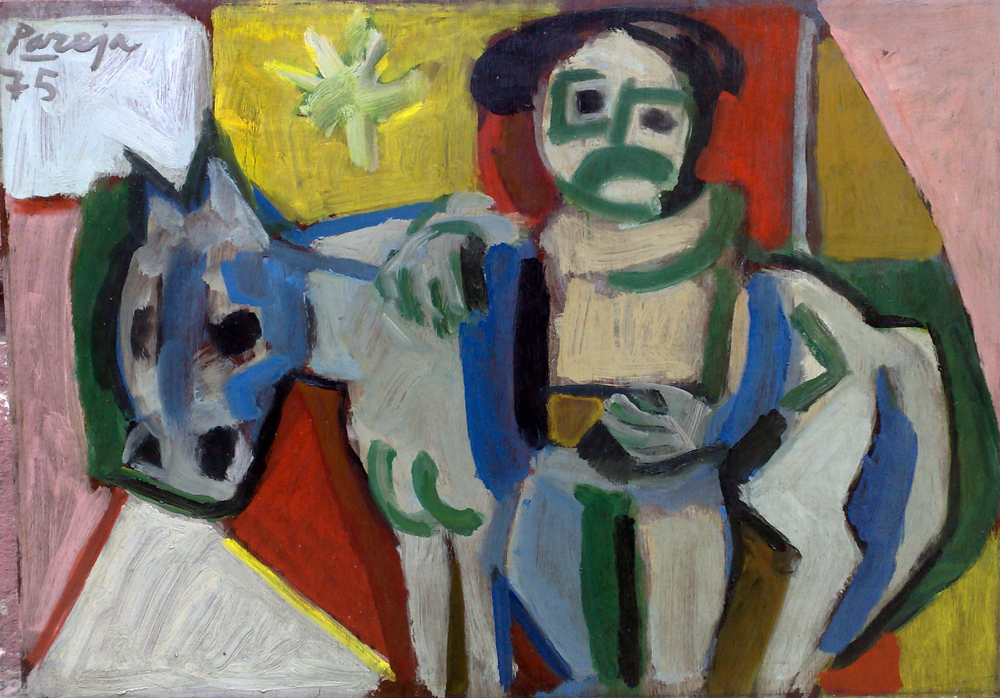
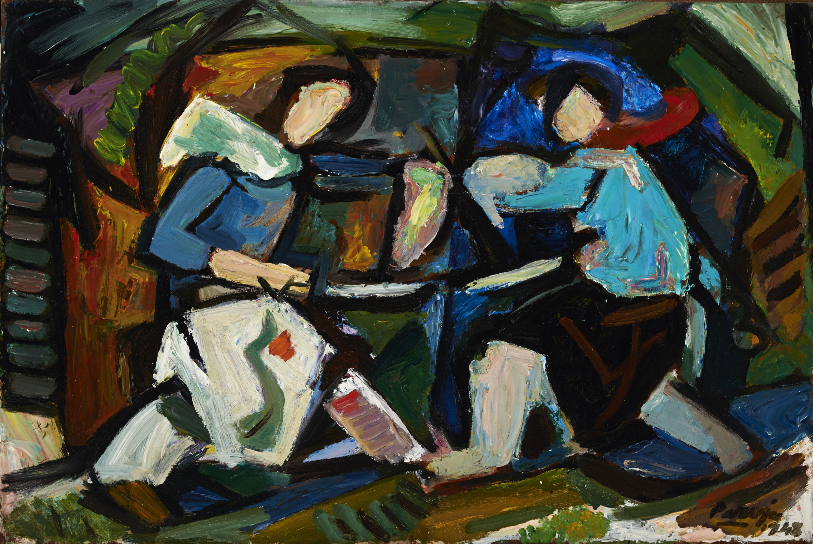
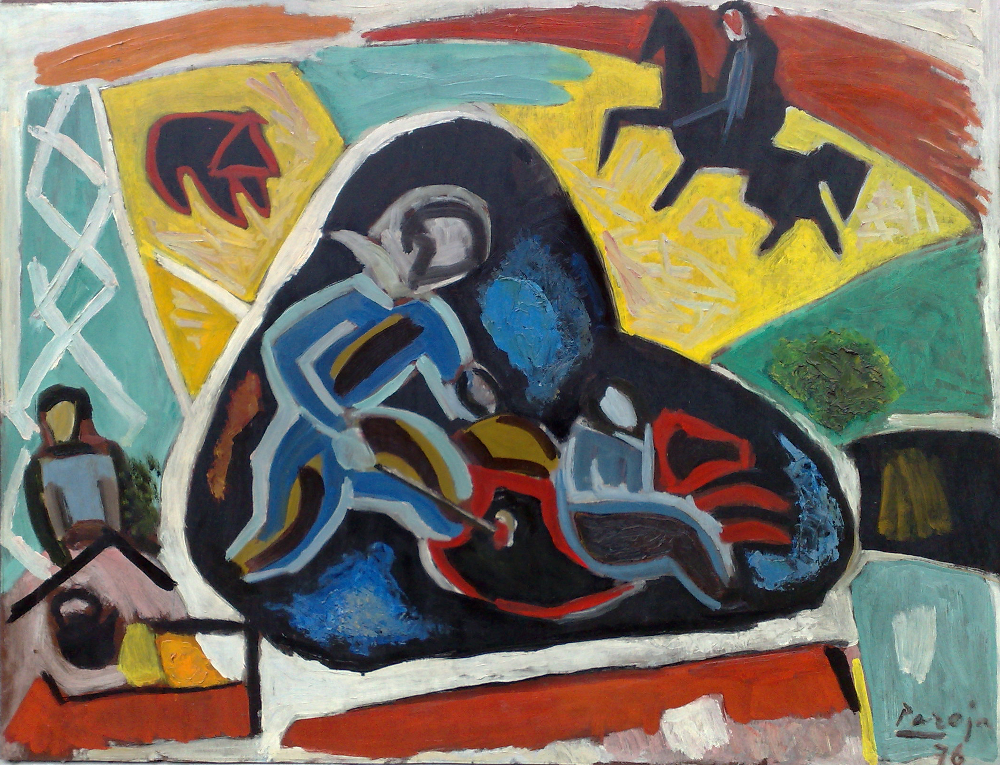

Análisis de la Obra I
ARTISTA: PAREJA, MIGUEL ÁNGEL
Miraremos las obras de Miguel Ángel Pareja para buscar el tema sobre el cual ha pintado.
En su pintura aparecen personajes de nuestra historia. Su principal personaje es el gaucho, al cual muestra realizando diferentes tareas.
Su obra nos cuenta sobre nuestra tierra, sus habitantes y costumbres.
-

LA YERRA
-

EL DUELO
-

MUJERES Y NIÑOS
-
Muchas de sus pinturas nos muestran la yerra. La yerra es una jornada en el campo en donde se realizan tres tareas muy importantes para la cría de ganado.
Una de ellas es la castración de las crías de ganado vacuno y ovino. A los novillos (las crías de las vacas) y a los corderos (las crías de las ovejas) se les cortan los testículos para que cuando crezcan no se conviertan en sementales, toros en el caso de los vacunos o carneros en el caso de los lanares. De esta forma es posible controlar la reproducción del ganado. Esto también mejora la calidad de la carne para su consumo.
En esa misma jornada de yerra se cortan las guampas al ganado, es decir los cuernos. Esto se hace para que el manejo de los animales resulte más fácil y menos peligroso.
La tercera tarea en la yerra es la de marcar el ganado con la marca del establecimiento. La marca es una vara de hierro que en su extremo tiene un dibujo que sirve para distinguir el ganado en caso de que se pierda o se mezcle con el ganado de algún vecino. Esta vara de hierro se calienta al fuego para marcar el cuero del animal.
-
En la historia del campo también se ve el enfrentamiento de hombres que pelean para resolver sus problemas. Eso nos cuenta la pintura llamada Duelo Criollo.
La campaña resultaba un lugar por momentos peligroso donde la ley no estaba presente y los hombres resolvían sus problemas enfrentándose con armas.
-
El artista no olvida a los otros habitantes que pueblan y completan el mundo del campo.
Muchas de sus pinturas están protagonizadas mujeres, niños y animales domésticos.